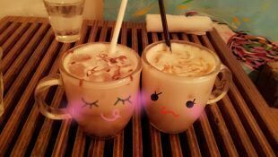

| 2013/01 14 Mon | 川村真洋 ひめたーんLOVE, おそろ っちのbag, 注意報 Rotty よぉ〜 ☆ |
やあ(・ω・)ノ
Rotty♪だよう。
こんばんわ☆
今日は日曜日だっ(*^^*)
ってことで
ひめか♪と2人で
遊びましたぁ〜(〃ω〃)
お昼の1時に待ち合わせしてぇ、
まひろ行きつけのカフェに
ひめかと２人で行って
まったりして
おしゃべりして
その後は カラオケに行ったよ♪
前々からずっと
遊ぼーね遊ぼーね(・□・)
カラオケ行こね行こね(・ω・)
ゆーてたから
すっっごい楽しかったよぉ〜♪
よく質問で、
ろってぃは誰の曲歌うの?
ってあるから
答えるねん(*^^*)
えとー、
絢香さん
安室奈美恵さん
加藤ミリヤさん
西野カナさん
MISIAさん
ドリカムさん
福原美穂さん...とか
他にも色々歌うよ(^ω^)
ひめかは バラードをたくさん
歌ってたよん(*^ω^*)
声量あるし滑舌いいし
すごく気持ちがこもってて
聞いてて気持ちかったよん♪
お散歩もたあ〜くさんしたよ、
ただ歩いてるだけで
楽しいの♪
いやぁ〜
本当楽しかったぁ〜〃ω〃
左がカフェモカ(ろってぃ)
右がキャラメルマキアート(ひめたん)

ほっこり...(*´ω`*)
ほんでねっ ‥
たまたまベレー帽
一緒だったの(〃ω〃)てへ。
まひろは赤ワインイロで
ひめかが 白にビーズがついたの
だった ♪
まひろが この前大阪に
帰った時、
お友達が まひろ帽子好きなのを
知ってくれていて
プレゼントしてくれたの＼(^-^)／
だから 大事にする♪
本当うれしかった ...
あっ、そーだ！
みさのお誕生日プレゼントは
bagをプレゼントしたのっ( ^ ^)/
みさには みさに似合う色を
選んだよ ^^
みさblogに載っけて
くれてるよん(*´ω`*)
嬉しかたなん♪
そしてまひろがブルー ★
ふてくされてる顔だ (´▽`)笑
鮮やかな青が
すごい好きなんだよねっ〃´▽`〃...。
最後に大事なこと。
Twitterで 川村真洋を名乗っている
偽ろってぃ-がいるらしいの。
Twitterは乃木坂メンバーは
やらないルールなので
だから 騙されないでね !
あーーーーしたはっっ )))
横浜で個別握手会wwww ♪
皆 きてねぇーん(*´▽`*)
楽しみに待ってます♪
おやすみなさい...
みーんな大好きだよぉ?
rottyより...,♪